Do You Really Need an SPA?
Wie Astro schnelle, interaktive Websites mit weniger JavaScript-Ballast ermöglicht
Vasco Schwarze · JUG Saxony Day 2026 · 25.9.2026
Umfrage
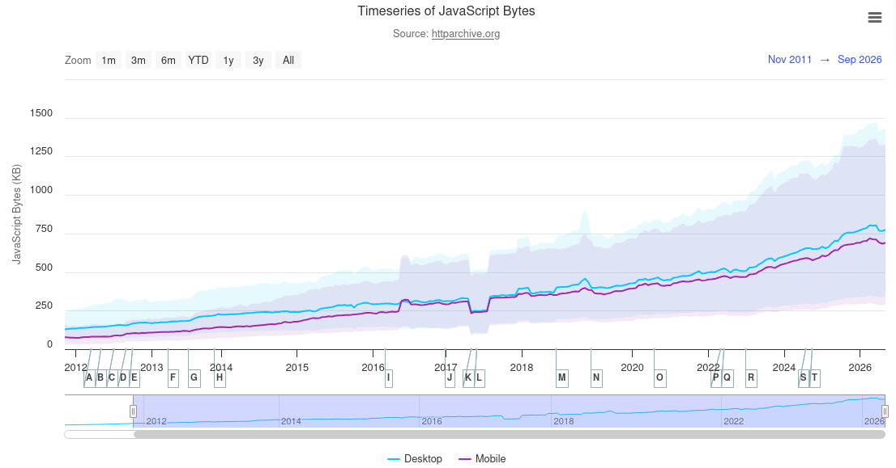
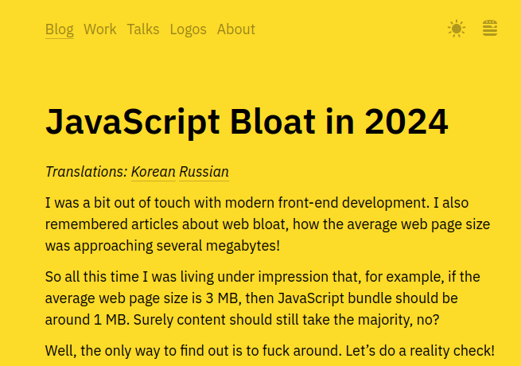
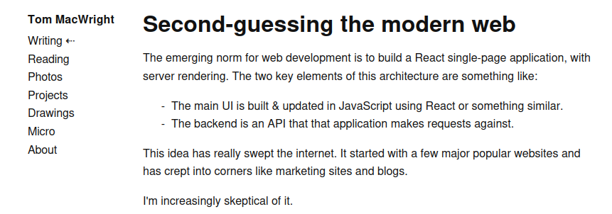
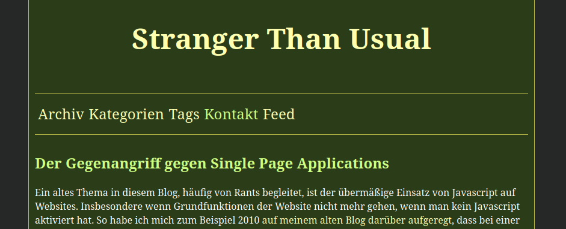
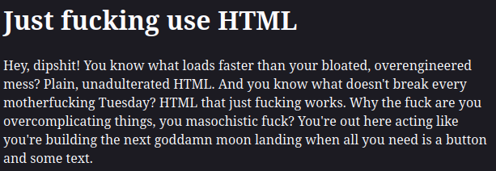
justfuckingusehtml.com
Die zentrale Frage
"Brauchen wir dafür wirklich eine SPA?"
Oder geht es auch leichtgewichtiger?
Worum es hier NICHT geht
- reines Astro-Tutorial
-
Framework-Vergleiche
(außer ein paar spezifische Metriken)
- KI
Wer bin ich?
Vasco Schwarze
Software-Entwickler
sciota GmbH
Ein kurzer Blick in die Vergangenheit...
Warum wurden SPAs zum Standard?
- flüssigere UX
- Nutzung von Hardware-Fortschritten
- geringere Serverlast
- klares mentales Modell
- riesiges Ökosystem
- Team-Gewohnheit
Die technischen Kosten
- JS benötigt
- Größere Bundles
- Verzögertes Laden der Seite
- schwieriges SEO
- Accessibility-Einschränkungen
Lässt sich das messen?
Na klar!
Lässt sich das messen?
Core Web Vitals
-
LCP < 2,5sek
-
INP < 200ms
-
CLS < 0,1
Warum interessiert uns das überhaupt?
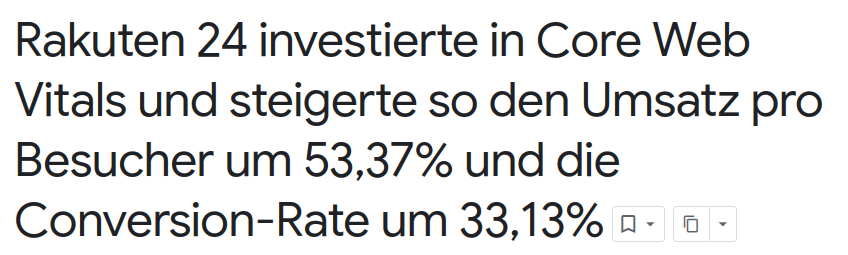
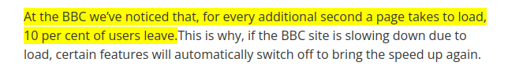
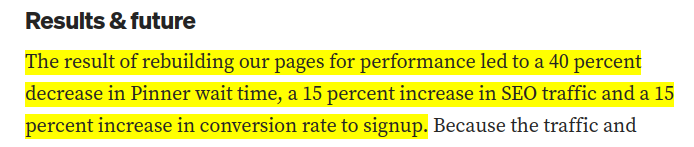
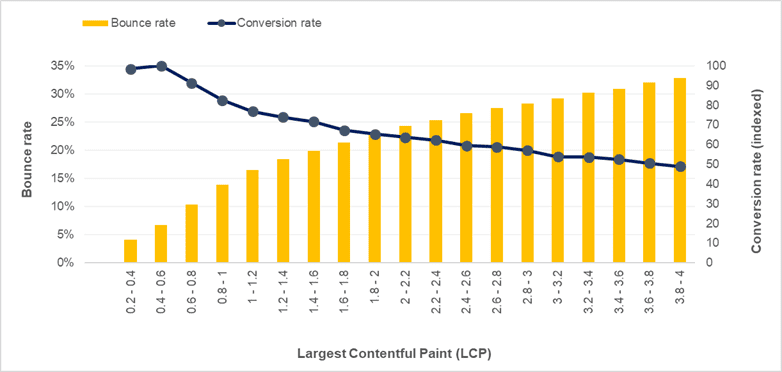
Warum interessiert uns das überhaupt?
- bessere UX -> zufriedene Nutzer :)
- Conversion/Retention
- Nachhaltigkeit
Zeit für einen Vergleich...
Die Baseline-App: Rezeptbuch
- Startseite mit ausgewählten Rezepten
- Übersicht mit Textsuche & Kategorie-Filter
- Detailseite mit Portionsrechner & Kochmodus-Checkliste
- Favoriten-Toggle mit localStorage-Persistenz
React 19 + React Router 7 · Vite-Build · ein JS-Bundle für die komplette App
Technischer Aufbau der Baseline
App.tsx
Technischer Aufbau der Baseline
context/RecipesContext.tsx
Technischer Aufbau der Baseline
pages/Home.tsx
Technischer Aufbau der Baseline
pages/RecipeDetail.tsx
Technischer Aufbau der Baseline
pages/Recipes.tsx
Technischer Aufbau der Baseline
hooks/useFavorites.ts
Die Baseline
| Metrik |
recipe-react (SPA) |
Build-Output gesamt (dist/) |
284,7 KB |
| LCP (Rezepteübersicht) |
146 ms |
| übertragene Datenmenge (Rezepteübersicht) |
89,8 KB |
| LCP ("Über uns") |
68 ms |
| übertragene Datenmenge ("Über uns") |
89,8 KB |
Das muss doch besser gehen...
Astros Philosophie
Ship Zero JavaScript by Default
Islands Architecture
Header (interaktive Insel)
Sidebar (statisch)
Hauptinhalt (statischer Text, Bilder etc.)
Karussell (interaktive Insel)
Footer (statisch)
Ähnliche Content-first Ansätze
- Qwik - Resumability
-
htmx - HTML-Attribute statt Komponenten
- Next.js - Partial Prerendering / RSC
- Astro - unser Beispiel heute
weitere coole Astro-Features
- Scoped CSS
- Content Collections
- Optimierte Bilder
- Einbindung von JS-Framework-Komponenten
- i18n
- View Transitions
Anatomie einer .astro-Datei
Anatomie einer .astro-Datei
Anatomie einer .astro-Datei
Anatomie einer .astro-Datei
Komponenten wiederverwenden
ExampleText.astro
<p class="text">
etwas Text
</div>
RecipesPage.astro
---
import ExampleText from "./ExampleText.astro";
---
<ExampleText />
Kind-Inhalt einbetten mit Slots
ExampleText.astro
<p class="text">
<slot />
</div>
RecipesPage.astro
---
import ExampleText from "./ExampleText.astro";
---
<ExampleText >
etwas Text
<ExampleText/>
Props
ExampleText.astro
---
type Props = {
text: string;
}
const { text } = Astro.props;
---
<p class="text">
{text}
</div>
RecipesPage.astro
---
import ExampleText from "./ExampleText.astro";
---
<ExampleText text={"etwas Text"} />
Rezeptbuch App - Version 2
File-based routing
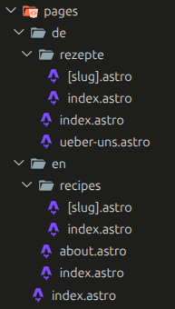
Pages
pages/de/ueber-uns.astro
Pages
pages/de/index.astro
Layout
layouts/BaseLayout.astro
Über uns - Inhalt
components/views/AboutView.astro
Scoped CSS
i18n
components/views/AboutView.astro
i18n
i18n/ui.ts
i18n
i18n/utils.ts
Content Collections
content.config.ts
Content Collections
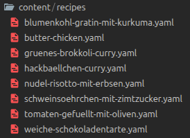
Content Collections
title:
de: "Blumenkohl-Gratin mit Kurkuma"
en: "Cauliflower Gratin with Turmeric"
description:
de: "Goldener Blumenkohl-Auflauf mit Kurkuma, Joghurt und geriebenem Käse."
en: "Golden roasted cauliflower bake with turmeric, yogurt, and grated cheese."
category: "Vegetarisch"
cookTime: 40
difficulty: 1
servings: 4
featured: true
image: "/images/recipes/blumenkohl-gratin-mit-kurkuma.jpg"
ingredients:
- name: "Blumenkohl"
amount: 1
unit: "Stück"
- name: "Kurkumapulver"
amount: 2
unit: "EL"
- name: "Griechischer Joghurt"
amount: 250
unit: "g"
- name: "Geriebener Käse"
amount: 150
unit: "g"
steps:
- "Den Ofen auf 180 °C vorheizen."
- "Den in große Stücke zerteilten Blumenkohl 5 Minuten in kochendes Wasser geben."
- "Den Blumenkohl in einer Gratinform mit Joghurt und Kurkuma vermischen."
- "Salzen und pfeffern, den geriebenen Käse darüber geben."
- "Alles 25 Minuten im Ofen backen."
Content Collections
Bei Schema-Verstoß: Build-Fehler
title:
de: "Blumenkohl-Gratin mit Kurkuma"
description:
de: "Goldener Blumenkohl-Auflauf mit Kurkuma, Joghurt und geriebenem Käse."
category: "Vegetarisch"
cookTime: 40
difficulty: 1
servings: 4
featured: true
image: "/images/recipes/blumenkohl-gratin-mit-kurkuma.jpg"
ingredients:
- name: "Blumenkohl"
amount: 1
unit: "Stück"
- name: "Kurkumapulver"
amount: 2
unit: "EL"
- name: "Griechischer Joghurt"
amount: 250
unit: "g"
- name: "Geriebener Käse"
amount: 150
unit: "g"
steps:
- "Den Ofen auf 180 °C vorheizen."
- "Den in große Stücke zerteilten Blumenkohl 5 Minuten in kochendes Wasser geben."
- "Den Blumenkohl in einer Gratinform mit Joghurt und Kurkuma vermischen."
- "Salzen und pfeffern, den geriebenen Käse darüber geben."
- "Alles 25 Minuten im Ofen backen."
Content Collections
Bei Schema-Verstoß: Build-Fehler
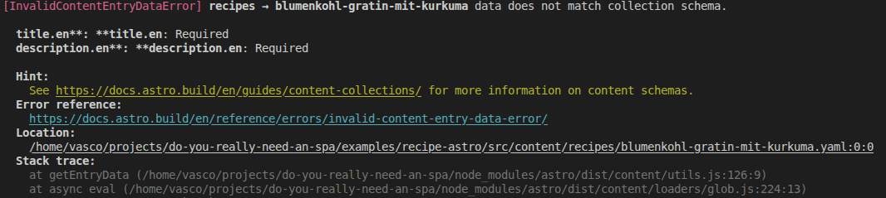
Content Collections
pages/de/index.astro
Dynamische Generierung von Seiten
pages/de/rezepte/[slug].astro
Dynamische Generierung von Seiten
Und jetzt...
...Zeit für Interaktivität!
Kochmodus-Checkliste
---
import Stars from "../Stars.astro";
import FavoriteToggle from "../FavoriteToggle.astro";
import PortionCalculator from "../PortionCalculator.astro";
import { useTranslations, localizedPath } from "../../i18n/utils";
import type { Lang } from "../../i18n/ui";
import type { CollectionEntry } from "astro:content";
type Props = {
lang: Lang;
recipe: CollectionEntry<"recipes">;
};
const { lang, recipe } = Astro.props;
const t = useTranslations(lang);
const { data } = recipe;
---
<article class="page">
<div class="hero">
<img src={data.image} alt={data.title[lang]} class="hero-image" />
<div class="hero-info">
<span class="category">{t(`category.${data.category}`)}</span>
<h1>{data.title[lang]}</h1>
<p>{data.description[lang]}</p>
<div class="meta-row">
<span>⏱ {data.cookTime} {t("recipe.minutes")}</span>
<Stars level={data.difficulty} lang={lang} />
<FavoriteToggle slug={recipe.id} title={data.title[lang]} lang={lang} />
</div>
</div>
</div>
<div class="content">
<section class="ingredients" aria-labelledby="ingredients-heading">
<h2 id="ingredients-heading">{t("recipe.ingredients")}</h2>
<PortionCalculator
servings={data.servings}
ingredients={data.ingredients}
lang={lang}
/>
</section>
<section class="steps" aria-labelledby="steps-heading">
<h2 id="steps-heading">{t("recipe.steps")}</h2>
<p class="hint">{t("recipe.steps.hint")}</p>
<ol class="step-list">
{
data.steps.map((step, index) => (
<li>
<label>
<input type="checkbox" id={`step-${index}`} />
<span>{step}</span>
</label>
</li>
))
}
</ol>
</section>
</div>
</article>
<script>
document
.querySelectorAll<HTMLInputElement>('.step-list input[type="checkbox"]')
.forEach((checkbox) => {
checkbox.addEventListener("change", () => {
checkbox.closest("li")?.classList.toggle("done", checkbox.checked);
});
});
</script>
<style>
...
</style>
components/views/RecipeDetailView.astro
Portionsrechner
---
...
const { data } = recipe;
---
<article class="page">
...
<div class="content">
<section class="ingredients" aria-labelledby="ingredients-heading">
<h2 id="ingredients-heading">{t("recipe.ingredients")}</h2>
<PortionCalculator
servings={data.servings}
ingredients={data.ingredients}
lang={lang}
/>
</section>
...
</div>
</article>
...
components/views/RecipeDetailView.astro
Portionsrechner
---
import { useTranslations } from '../i18n/utils';
import type { Lang } from '../i18n/ui';
type Props = {
servings: number;
ingredients: { name: string; amount: number; unit: string }[];
lang: Lang;
}
const { servings, ingredients, lang } = Astro.props;
const t = useTranslations(lang);
---
<div class="portion-calculator" data-base-servings={servings}>
<div class="stepper">
<label for="servings-input">{t('recipe.servings')}</label>
<div class="stepper-controls">
<button type="button" data-decrement>−</button>
<input
type="number"
id="servings-input"
data-servings-input
min="1"
max="50"
value={servings}
/>
<button type="button" data-increment >+</button>
</div>
</div>
<ul class="ingredient-list">
{ingredients.map((ing) => (
<li>
<span class="amount" data-amount={ing.amount} data-unit={ing.unit}>
{ing.amount} {ing.unit}
</span>
<span>{ing.name}</span>
</li>
))}
</ul>
</div>
<script>
import '../scripts/portion-calculator';
</script>
components/PortionCalculator.astro
Portionsrechner
scripts/portion-calculator.ts
Favoriten-Toggle
---
type Props = {
slug: string;
};
const { slug } = Astro.props;
---
<button
type="button"
class="fav-btn"
data-slug={slug}>♡</button
>
<script>
import "../scripts/favorite-toggle";
</script>
components/FavoriteToggle.astro
Favoriten-Toggle
scripts/favorite-toggle.ts
Such- und Filterleiste
ganz kurz im Überblick
Fazit
Interaktivität geht auch ohne Framework!
Benchmark-Vergleich
| Metrik |
recipe-react (SPA) |
recipe-astro |
Build-Output gesamt (dist/) |
284,7 KB |
260,6 KB |
| LCP (Rezepteübersicht) |
146 ms |
93 ms |
| übertragene Datenmenge (Rezepteübersicht) |
89,8 KB |
5,9 KB |
| LCP ("Über uns") |
68 ms |
38 ms |
| übertragene Datenmenge ("Über uns") |
89,8 KB |
3,5 KB |
Astro kann mehr als nur statisch
- SSR
- Server Islands
- Actions
- Endpoints
- ...
Serveradapter
astro.config.ts
Serveradapter
astro.config.ts
Serveradapter
Actions
- Typisierte, serverseitige Funktionen
- aufrufbar wie normale JS-Funktionen
Actions
actions/index.ts
Actions
---
import { useTranslations } from "../i18n/utils";
import type { Lang } from "../i18n/ui";
type Props = { lang: Lang; slug: string };
const { lang, slug } = Astro.props;
const t = useTranslations(lang);
---
<form
data-rating-form
data-label-thanks={t("rating.thanks")}
data-label-error={t("rating.error")}
>
<input type="hidden" name="slug" value={slug} />
<fieldset>
<legend>{t("rating.heading")}</legend>
<div class="stars" role="radiogroup" aria-label={t("rating.heading")}>
{
[1, 2, 3, 4, 5].map((value) => (
<label>
<input type="radio" name="rating" value={value} required />
<span aria-hidden="true">★</span>
</label>
))
}
</div>
<button type="submit">{t("rating.submit")}</button>
</fieldset>
<p class="rating-result" data-rating-result hidden></p>
</form>
<script>
import "../scripts/rating-form";
</script>
<style>
...
</style>
components/RatingForm.astro
Actions
scripts/rating-form.ts
Server Islands
- dynamische, on-demand gerenderte Inseln
components/views/RecipeDetailView.astro
Server Islands
components/ServerHighlights.astro
SSR
- komplette Seite on-demand gerendert

SSR
Zwischenstand
- Server Island — Live-Daten auf sonst vorgerenderter Seite
- Astro Action — typisierter Aufruf eines Server-Endpunkts
- On-Demand-Seite — komplett neu gerendert pro Request
Use Cases für Server-Funktionen
- Authentifizierung & personalisierte Inhalte
- CAPTCHAs
- Häufig wechselnde, nicht vorab bekannte Daten
Wann SPAs die bessere Wahl sind
→ Komplexe, hochinteraktive Anwendungen mit viel Client-State
z.B. Dashboards, Editoren, Tools mit dauerhaftem "App-Charakter"
Ein Fragenkatalog
für euer nächstes Projekt
-
Wie viel der Seite ist tatsächlich interaktiv vs. nur reiner Content?
-
Wird clientseitiger Zustand benötigt, der über viele Komponenten hinweg geteilt
und synchron gehalten werden muss?
-
Ist SEO bzw. die Core Web Vitals ein kritischer Faktor?
-
Besteht bereits eine erhebliche Investition in ein bestehendes SPA-Setup?
Die entscheidende Frage ist nicht "Welches Framework?", sondern
"Wie viel JavaScript braucht diese Seite tatsächlich?"
Vasco Schwarze · vasco.schwarze@sciota.io · GitHub: VascoSchwarze
Slides & Code unter: https://github.com/VascoSchwarze/do-you-really-need-an-spa